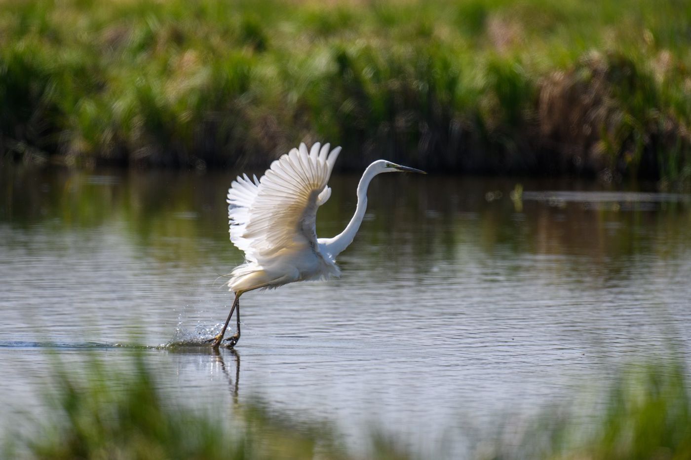

Two more stories on this card
PO Box 214
Port Alder, WA 98368
Meet the people who were there.

Stand-in: still from Marisol's videoMarisol Reyes
The ecologistEleven years counting salmon here. She was there the morning the tide came back.
Photo: still from Walt's video
Walt Pruitt
Why I giveForty years fishing this coast, and a Tide Keeper since 2019. He’ll tell you why.
 Go to commontide.org/givingtuesday then point your phone at either photo.
Go to commontide.org/givingtuesday then point your phone at either photo.
Nonprofit Org
U.S. Postage
Paid
Port Alder, WA
Permit No. 42
U.S. Postage
Paid
Port Alder, WA
Permit No. 42
Address service requested
Ruth Ellison1420 Harbor View Rd
Port Alder, WA 98368
No phone handy?
You can still give.
Every gift through December 1 is matched, up to $25,000.
Onlinecommontide.org/giveOr give monthly and become a Tide Keeper.
By phone(360) 555-0142Weekdays, 9 to 5. A real person answers.
By mailPO Box 214
Port Alder, WA 98368Make checks payable to Common Tide.
Port Alder, WA 98368Make checks payable to Common Tide.
Common Tide is a 501(c)(3) nonprofit, and your gift is tax-deductible as allowed by law. Demo: Common Tide is a fictional organization created to show how Popcode works.